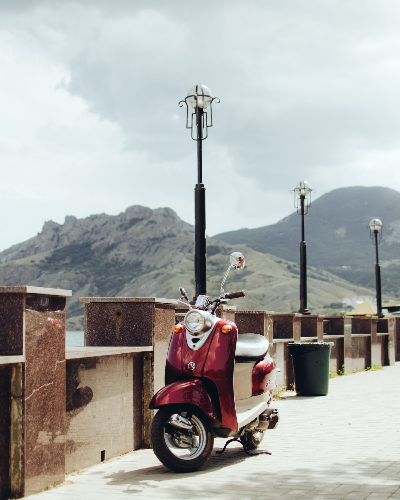

01
하노이의 믿을 수 있는 딜러
50cc 전문점. 모든 차량은 경찰 데이터베이스로 조회됩니다 — 도난 아님, 서류 정상.
02
험하게 타지 않음
학교를 오가던 학생들의 중고입니다. 관광지에서 재판매되는 험한 차량과 다릅니다.
03
정비 후 보증 제공
전체 정비, 광택, 서류 폴더, 50% 바이백 증서. 깨끗한 차량과 안심을 드립니다.
정직하게 말씀드립니다: 하노이에서 검증된 오토바이를 가져옵니다 — 도난 차량이 아니며 험하게 탄 차량도 아닙니다. 정비하고 서류를 준비하며 보증을 드리고, 3개월 이내 50%에 되사드립니다.

본질을 숨기지 않습니다 — 바로 거기에 가치가 있습니다.
50cc 전문점. 모든 차량은 경찰 데이터베이스로 조회됩니다 — 도난 아님, 서류 정상.
학교를 오가던 학생들의 중고입니다. 관광지에서 재판매되는 험한 차량과 다릅니다.
전체 정비, 광택, 서류 폴더, 50% 바이백 증서. 깨끗한 차량과 안심을 드립니다.
첫 차량을 준비 중입니다. 입고되면 가장 먼저 알려드릴까요? 메시지를 보내주세요.
저희에게 사는 것은 위험이 아니라 유연한 선택입니다. 3개월 이내에 구매가의 50%로 되사는 것을 공식 보장합니다. 렌트보다 저렴합니다: 보증금 묶임 없음, 여권 담보 없음, 흠집마다 요금 없음.